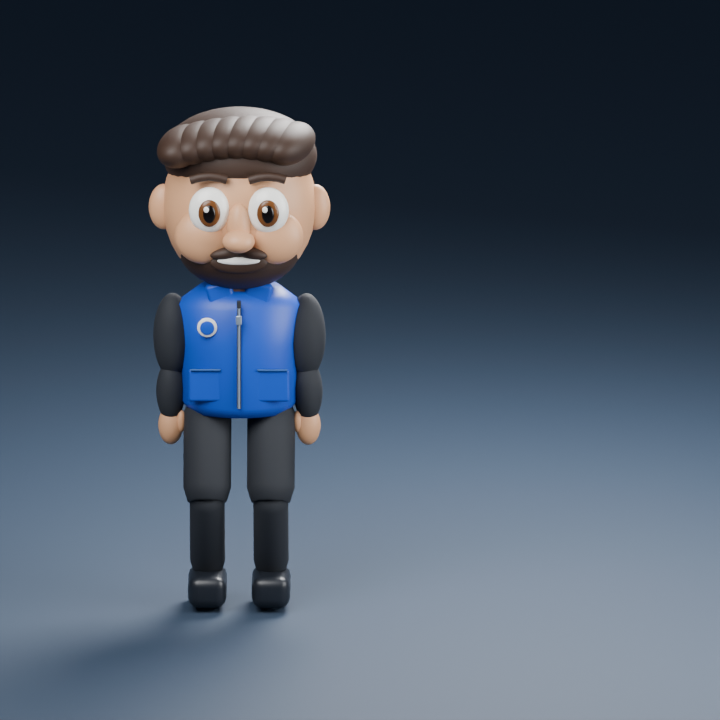
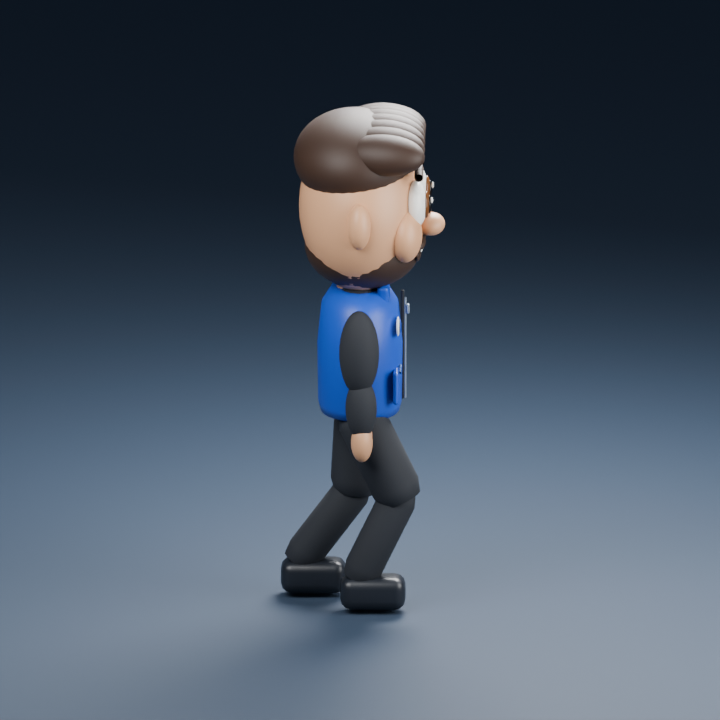

شخصية جديدة مبنية داخل Blender. هذه معاينة للشكل والحركة، وليست نسخة مطابقة للصورة المرجعية.
تجربة الالتفات والمشي

7.5 ثوانٍ: وقوف ← التفات يمين ← مشي ← توقف ← مواجهة المشاهد. عند تكرار المعاينة يرجع إلى نقطة البداية، ولا يمشي رحلة عودة. إضاءة الحركة مبسطة لتسريع المعاينة.
فحص الجانب أثناء المشي

الشعر واللحية والوجه واليدين تقريب أولي. الشارة مؤقتة وليست شعار الشركة الرسمي. الرمش وتسليم الورقة غير منفذين بهذا النموذج.